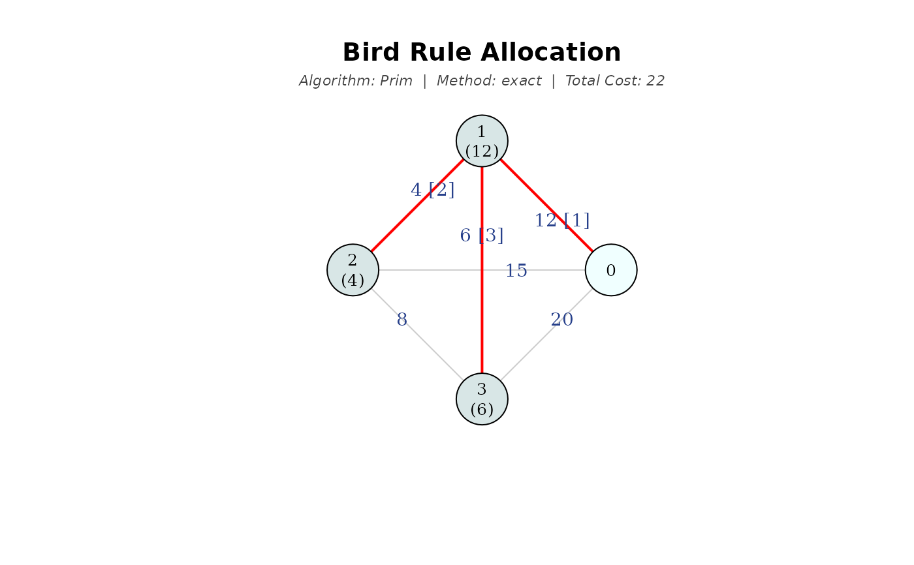
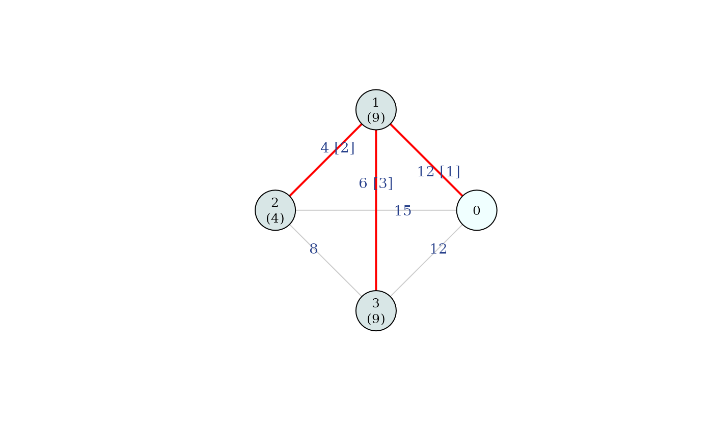

This function computes Bird's cost allocation (Bird, 1976) for a minimum cost spanning tree problem \((N_0, C)\). The Bird rule, denoted as \(B(N_0, C)\), assigns to each agent the cost of the arc that connects them to the source during the construction of a minimum cost spanning tree using Prim's algorithm.
Arguments
- C
cost matrix between nodes. Accepts multiple formats (see "Supported formats for
C" below).- draw
logical; if
TRUE, plots the network highlighting an optimal tree in red, indicating the stage at which each arc is added (in brackets) and the cost allocated to each agent (in parentheses below the node). For \(n \le 3\) with ties andmethod = "exact", it also displays all possible trees.- which.plot
character string indicating which plots to display (only for \(n \le 3\) with ties and
method = "exact"). If"details", displays the detailed breakdown of all trees and allocations according to the agents' entry orders; if"main", the average allocation is plotted. Default isc("main", "details").- titles
logical; if
TRUE(default), adds a main title specifying the allocation rule and a subtitle with the algorithm, method (exact or Monte Carlo), and the total network cost.- method
character string specifying the calculation method when ties occur. If
"exact"(default), computes all \(n!\) permutations; if"montecarlo", estimates the average allocation through random sampling usingnsimpermutations (recommended for large networks).- nsim
integer; the number of permutations to sample when using
method = "montecarlo". Default is 10,000.
Value
A list containing:
bird: the Bird's allocation vector \(B(N_0, C)\) for the natural ordering.e_bird: the extended Bird's allocation (average over permutations if ties exist; equal tobirdotherwise).arcs: if the MCST is unique, a data frame of edges \((i, j)\) in the tree and the stage at which they were added; if ties exist, a list of such data frames, one per distinct optimal tree.total: the total cost of the MCST, \(m(N_0, C)\).percentage: the share of the total cost allocated to each agent, based one_bird.ranking: a ranking of agents by cost ine_bird(from highest to lowest; ties marked with *).perms: if ties exist, a list with$table(allocations for at most the first 6 permutations computed, regardless of \(n\)),$summary(distinct allocations with their multiplicity, sorted in decreasing order) and$nperms(total number of permutations computed);NULLif the MCST is unique.is_unique: logical; ifTRUE, the MCST is unique.method: the method applied for computing the extended rule ("exact"or"montecarlo").
Details
For a given tree \(g^n\) constructed following Prim's algorithm, the allocation for each agent \(i \in N\) is given by:
$$B_i(N_0, C) = c_{i^0 i},$$
where \(i^0\) is the node to which agent \(i\) is first connected in the process of building the network.
When the minimum cost spanning tree is not unique, the rule is extended by
averaging the allocations over all possible permutations \(\pi \in \Pi_N\)
(method = "exact"):
$$B(N_0, C) = \displaystyle{\dfrac{1}{n!} \sum_{\pi \in \Pi_N} B^{\pi}(N_0, C)},$$
where \(B^{\pi}(N_0, C)\) is the allocation obtained by applying Prim's algorithm to \((N_0, C)\) and solving indifferences by selecting the first agent given by the permutation \(\pi\), as proposed by Dutta and Kar (2004).
Alternatively, method = "montecarlo" estimates the average allocation
through random sampling using \(n_{\text{sim}}\) permutations. This is highly useful
when the number of agents is large, as it significantly reduces computation
time while providing a very accurate approximation:
$$B(N_0, C) \approx \displaystyle{\dfrac{1}{n_{\text{sim}}} \sum_{k=1}^{n_{\text{sim}}} B^{\pi_k}(N_0, C)},$$
where \(\pi_k\) represents each of the randomly sampled permutations. For networks with few agents, the exact method is preferred to avoid potential overestimations.
Supported formats for C
Note: In all cases, Inf is accepted for disconnected node pairs. The first
row/column is assumed to be the source node (0).
The function accepts the following formats for the cost input:
- Numeric vector
The lower triangle of a symmetric cost matrix, excluding the diagonal. Length must be \(n(n+1)/2\), where \(n\) is the number of agents (excluding the source).
- Square matrix / Data frame
A standard adjacency matrix where
C[i, j]represents the cost between node \(i\) and node \(j\).- Edge list (matrix or data frame)
An alternative to the full matrix. It must contain columns named
"from"and"to", plus a third column for the weights/costs.- 'igraph' object
A weighted undirected graph. See the
igraphpackage for details on creating these objects.- File path
A string pointing to a
.csv,.xlsx, or.xlsfile. The file can contain either a square matrix (without headers) or an edge list (with"from"and"to"headers).
References
Bergantiños G, Vidal-Puga J (2021) A review of cooperative rules and their associated algorithms for minimum-cost spanning tree problems. SERIEs, 12:73-100
Bird C (1976) On cost allocation for a spanning tree: a game theoretic approach. Networks 6(4):335–350.
Dutta B, Kar A (2004) Cost monotonicity, consistency and minimum cost spanning tree games. Games Econom Behav 48(2):223–248.
See also
mcstDuttaKar for other rule based on Prim's algorithm.
mcstGameIrred for a cooperative game whose Shapley
value coincides with Bird's solution when applied to the irreducible matrix \(\bar{C}\).
mcstRules for an overview of the available rules and analysis tools in the package.
Examples
# Simple vector input
mcstBird(c(12, 15, 20, 4, 6, 8), draw = TRUE)

#> 1 2 3
#> 12 4 6
# Input with infinite costs (disconnected nodes)
C_inf <- c(5, 9, Inf, 15, 6, Inf, 7, Inf, Inf, Inf,
Inf, 8, 7, Inf, Inf, 5, Inf, Inf, 8, 9, 11)
mcstBird(C_inf)
#> 1 2 3 4 5 6
#> 5 7 5 7 6 9
# Matrix input with ties
C_mat <- matrix(c(0, 12, 15, 12,
12, 0, 4, 6,
15, 4, 0, 8,
12, 6, 8, 0), byrow = TRUE, ncol = 4)
mcstBird(C_mat, draw = TRUE, which.plot = "main", titles = FALSE)

#> Non-unique MCST detected
#> 1 2 3
#> B(id) 12 4 6
#> E[B(pi)] 9 4 9